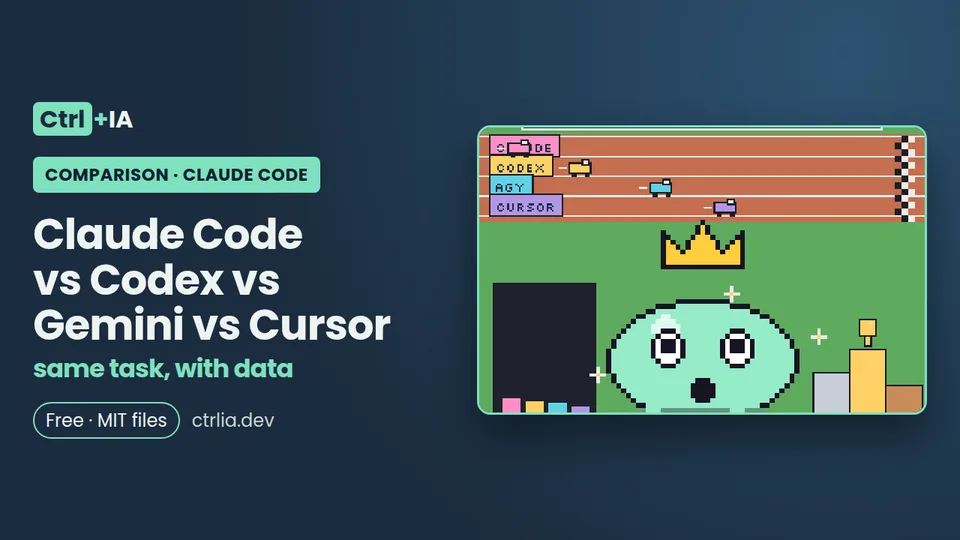

Comparison · Intermediate · 20 min
Claude Code vs Codex vs Gemini vs Cursor: same task, with data
How to compare Claude Code, Codex CLI, Gemini or Antigravity CLI and Cursor CLI on the same task, with hidden tests and 5 runs. Methodology and scripts.

Tested with Claude Code 2.1.316 · reviewed
See the files on GitHub Free · MIT license
Summary and verdict
Methodology ready; results pending. We haven't run the test yet, so this page declares no winner and publishes no performance numbers. What you do get: the full design of an honest comparison between four terminal coding agents (Claude Code, OpenAI's Codex CLI, Google's Antigravity CLI or Gemini CLI, and Cursor CLI), the official facts about each one, verified commands and the scripts to repeat it yourself on your own code. They're in the ctrlia-claude-code-vs-codex-gemini-cursor repository.
Impartiality notice: Ctrl+IA is a site about Claude Code. That's why we'll publish everything (repository, prompts, script and raw logs), including the results where Claude Code loses. Once we have data, the verdict will be per task type, not an overall winner.
The four contenders, with official data
- Claude Code (Anthropic), version 2.1.316 installed on our PC. CLI with headless mode
claude -pand JSON output. Requires Pro, Max, Ultra, Team or Enterprise, or an API key (pricing). - Codex CLI (OpenAI), 0.166.0 according to npm on 1 Nov 2026. Installed with
npm install -g @openai/codex,brew install --cask codexor the chatgpt.com/codex/install.sh script. Its README recommends signing in with ChatGPT to use it within the Plus, Pro, Business, Edu or Enterprise plans, and it also accepts an API key. The non-interactive mode iscodex exec;/initcreates an AGENTS.md. - Gemini CLI (Google), 0.66.0 on npm. According to its README, since 18 Jun 2026 it is only for Gemini Code Assist Standard/Enterprise licenses and legacy paid keys. Free individual access and the Google AI Pro/Ultra plans moved to Antigravity CLI, whose command is
agyand whose personal authentication covers the Free, Pro and Ultra plans. - Cursor CLI: installed with
curl https://cursor.com/install -fsS | bash, the command isagentand in scripts it usesagent -pwith theCURSOR_API_KEYvariable (documentation).
How we test it (methodology)
The repository and the three tasks
A small public repository in Python 3.12, using only the standard library and pytest (about 600 lines), frozen at a tagged commit, so that language and dependencies favor nobody. Three tasks, each in a tareas/Tn.md file with the same text for everyone:
- T1, fix a bug:
parsear_fechafails with dates like "31/12/2026" and with leap years; there's a visible failing test. - T2, add a feature: an
exportar --csvcommand that handles commas, quotes and accented characters in UTF-8. - T3, refactor without breaking: split a 400-line module into three without changing behavior or adding dependencies.
Each task has hidden tests, kept outside the repository, that are copied in only after the agent finishes: they show whether the fix is real or only passes the visible test. The instructions go inside the prompt (not in CLAUDE.md, AGENTS.md or custom rules) so no tool gets an advantage from reading its own config file.
Metrics: time, cost, quality and tests
- Time: wall-clock seconds from launching the command until it ends, measured by the script, and number of turns if the tool reports it (Claude Code gives
duration_msandnum_turnsin its JSON). - Cost: input and output tokens and cost in dollars when the tool reports them. In Claude Code,
total_cost_usdis an estimate at API prices even if you use a subscription. If a tool doesn't report tokens we write "not reported" and don't make it up. - Quality: percentage of hidden tests passed (main metric), visible tests passed, files changed outside the task scope, new dependencies, diff size (
git diff --stat) and a 1-to-5 readability score given by a person reviewing the diff without knowing which tool made it. - Honesty: did it claim the tests passed when they didn't? Recorded as a "false claim".
- Human interventions: zero, because everything runs headless with equivalent permissions (edit files inside the repository and run pytest).
Repetitions, variable control and blind evaluation
Models don't always give the same answer, so a single run proves nothing (in our research we discarded a DeployHQ comparison for exactly that reason: it made one run per tool). The plan:
- 5 repetitions per tool and task: 15 per tool, 60 in total with all four. We publish the median and the range (minimum and maximum), never just the best.
- Same PC (Linux, 12 cores, 7.6 GB RAM), clean clone of the repository on every run and versions recorded on the test day.
- Default model of each tool recorded, plus an optional second round with each tool's most capable model.
- Interleaved runs, so a service outage or the time of day doesn't affect only one tool.
- Spending cap per run (in Claude Code,
--max-budget-usd 2). - Blind evaluation: a script renames the branches to A, B, C and D before a person scores readability.
The commands
Claude Code headless, with scoped permissions and a spending cap (flags verified in 2.1.316):
claude -p "$(cat tareas/T1.md)" --output-format json \
--permission-mode acceptEdits \
--allowedTools "Bash(python3 -m pytest *)" \
--max-budget-usd 2 --no-session-persistence > claude-T1-1.json
python3 -c "import json;d=json.load(open('claude-T1-1.json'));print(d['duration_ms'],d['num_turns'],d['total_cost_usd'],d['usage']['output_tokens'])"The other agents, according to their official documentation (not tested here: we haven't installed them):
# Codex CLI
npm install -g @openai/codex
codex exec "$(cat tareas/T1.md)"
# Cursor CLI
curl https://cursor.com/install -fsS | bash
export CURSOR_API_KEY=... # your key, never in the repository
agent -p --force --output-format json "$(cat tareas/T1.md)"
# Antigravity CLI (Gemini CLI's successor for individuals)
curl -fsSL https://antigravity.google/cli/install.sh | bash
agy --version
# Gemini CLI (Code Assist licenses or legacy paid keys only)
gemini -p "$(cat tareas/T1.md)" --output-format jsonThe single-run script
bench.sh clones the test repository into a temporary folder, launches the tool, measures the time, saves the diff and then copies in and runs the hidden tests. It's the repository file (en/bench.sh), checked with bash -n and with a simulated claude (spending nothing):
#!/usr/bin/env bash
# bench.sh — one run: bench.sh <tool> <task> <repetition>
# Tools: claude | codex | cursor | agy. Tasks: T1 | T2 | T3.
# Requires: the test repo in $FIXTURE (fixed commit) and the hidden tests in $HIDDEN_TESTS (outside the repo).
set -euo pipefail
[ $# -eq 3 ] || { echo "usage: $0 <tool> <task> <repetition>" >&2; exit 2; }
H=$1; T=$2; N=$3
FIXTURE=${FIXTURE:?set FIXTURE}; HIDDEN_TESTS=$(cd "${HIDDEN_TESTS:?set HIDDEN_TESTS}" && pwd)
OUT=$PWD/${OUT:-results}; mkdir -p "$OUT"; LOG=$OUT/$H-$T-$N
W=$(mktemp -d); trap 'rm -rf "$W"' EXIT
git clone -q "$FIXTURE" "$W/repo"; cd "$W/repo"
PROMPT=$(cat "tareas/$T.md")
rc=0; t0=$(date +%s.%N)
case $H in
claude) claude -p "$PROMPT" --output-format json --permission-mode acceptEdits \
--allowedTools "Bash(python3 -m pytest *)" --max-budget-usd 2 \
--no-session-persistence > "$LOG.json" || rc=$? ;;
codex) codex exec "$PROMPT" > "$LOG.txt" || rc=$? ;; # JSON and sandbox flags: confirm with `codex exec --help` on the test day
cursor) agent -p --force --output-format json "$PROMPT" > "$LOG.json" || rc=$? ;;
agy) echo "Antigravity CLI: headless mode not verified; see its Headless mode page" >&2; exit 2 ;;
*) echo "unknown tool: $H" >&2; exit 2 ;;
esac
t1=$(date +%s.%N)
# the diff before copying in the hidden tests, so they don't count as the agent's changes
git diff --stat HEAD > "$LOG.diff.txt"; git status --porcelain >> "$LOG.diff.txt"
python3 -m pytest -q tests --tb=no > "$LOG.visible.txt" 2>&1 || true
cp -r "$HIDDEN_TESTS" ./hidden_tests
python3 -m pytest -q hidden_tests --tb=no > "$LOG.hidden.txt" 2>&1 || true
echo "$H,$T,$N,$(python3 -c "print(round($t1 - $t0, 2))"),$rc" >> "$OUT/times.csv"And the full loop, 4 tools × 3 tasks × 5 repetitions, interleaved (en/lote.sh; TOOLS=claude ./lote.sh runs only Claude Code):
#!/usr/bin/env bash
# lote.sh — all tools × T1-T3 × 5 repetitions, interleaved
set -euo pipefail
cd "$(dirname "$0")"
mkdir -p results
for n in 1 2 3 4 5; do
for t in T1 T2 T3; do
for h in ${TOOLS:-claude codex cursor agy}; do
./bench.sh "$h" "$t" "$n" || echo "$h,$t,$n,,failed" >> results/times.csv
done
done
doneWhat we can measure on this PC and what needs third-party accounts
- Today, on our PC: all of Claude Code. It's installed (2.1.316), signed in to claude.ai on the Max plan, and its headless JSON mode was checked on 1 Nov 2026 (fields
result,duration_ms,num_turns,total_cost_usdandusage). The 15 Claude Code runs consume the plan's allowance; the dollar cost will be an estimate. - Pending approval for installs and accounts (we installed nothing third-party): Codex CLI (npm or script, and a ChatGPT Plus or higher account, or an OpenAI API key); Antigravity CLI (official installer and a Google account; the Free plan limits weren't verified); Gemini CLI (only with a Code Assist license or legacy paid key, so the usual move is to replace it with Antigravity CLI and explain why); Cursor CLI (official installer, a Cursor account and
CURSOR_API_KEY; the required plan wasn't verified). - To confirm on the test day: the exact
codex execflags (JSON and sandbox) and Antigravity's headless mode, which we couldn't read in their documentation.
Comparison table
Official data as of 1 Nov 2026. The result rows are empty on purpose: results pending.
| Claude Code | Codex CLI | Antigravity CLI / Gemini CLI | Cursor CLI | |
|---|---|---|---|---|
| Vendor | Anthropic | OpenAI | Cursor | |
| Version | 2.1.316 (installed) | 0.166.0 (npm) | Gemini CLI 0.66.0 (npm); agy not recorded | not recorded |
| Headless command | claude -p | codex exec | agy: not verified; gemini -p | agent -p |
| Account | Pro, Max, Ultra, Team, Enterprise or API | ChatGPT Plus or higher, or API | agy: Google account (Free, Pro, Ultra); gemini: Code Assist | Cursor account and CURSOR_API_KEY |
| Instructions file | CLAUDE.md | AGENTS.md | not verified | not verified |
| Tested by Ctrl+IA | Commands yes; benchmark no | Not installed | Not installed | Not installed |
| Hidden tests passed (median and range) | pending | pending | pending | pending |
| Time per task | pending | pending | pending | pending |
| Reported cost or tokens | pending | pending | pending | pending |
| Files out of scope | pending | pending | pending | pending |
| False claims | pending | pending | pending | pending |
| Readability (1-5, blind) | pending | pending | pending | pending |
When there are results we'll publish one table per task (T1, T2, T3) with these rows, the date and the versions. Rules we'll follow: no third-party prices except linked to their official page with a date, no comparing subscription plans as if they were equivalent (each vendor measures usage differently), and repeat the test when versions change, because in a month the result may be different.
When to use each one
Without our own results, we can only guide you with the official facts:
- Claude Code, if you already pay for a Claude plan or want its headless JSON mode, spending cap and fine-grained permissions (permissions, CLAUDE.md). If you're unsure between terminal, desktop or web, see Which Claude should I open?.
- Codex CLI, if you already pay for ChatGPT Plus or higher: it's included in your plan.
- Antigravity CLI, if you want Google's option with a personal account; Gemini CLI only if your company has a Gemini Code Assist license.
- Cursor CLI, if your team already works in Cursor. And remember the official Claude Code extension also works inside Cursor (how to install it safely).
- Repeat it yourself: clone the repository, swap the tasks for something from your own code and run
lote.shwith the tools you have. That's what will really tell you which one suits you. If you want to try local models in Claude Code, see Ollama and OpenRouter; the full route to get started is in Start here.
FAQ
Which is better, Claude Code or Codex?
It depends on the task and changes with every version. We haven't run the test yet; when we publish it, with date, versions and script, look at the table for your task type and repeat it on your own repository before paying.
Is Gemini CLI still free?
According to its official README, since 18 Jun 2026 Gemini CLI is for Gemini Code Assist Standard/Enterprise licenses and legacy paid keys; free individual access moved to Antigravity CLI (command agy). We haven't verified the limits of Antigravity's free plan.
Why don't you compare plan prices?
Each vendor measures usage differently and changes it often. We compare what can be measured (time, reported tokens, quality) and link each vendor's official pricing page with a date.
Can I use Claude Code inside Cursor?
Yes: the official Claude Code extension installs in Cursor (the documentation has a direct link). Our VS Code recipe explains how to install it safely after the tampered version served on 29 Oct by Cursor's marketplace.
Why Python and not JavaScript?
So the test runs with only the standard library and pytest, without installing dependencies that might fail. A second round in TypeScript with the same design can be added.
Can a Claude Code site be impartial?
We say so up front and compensate by publishing everything: repository, prompts, script and raw logs, including where Claude Code loses. Anyone can repeat it and correct us.